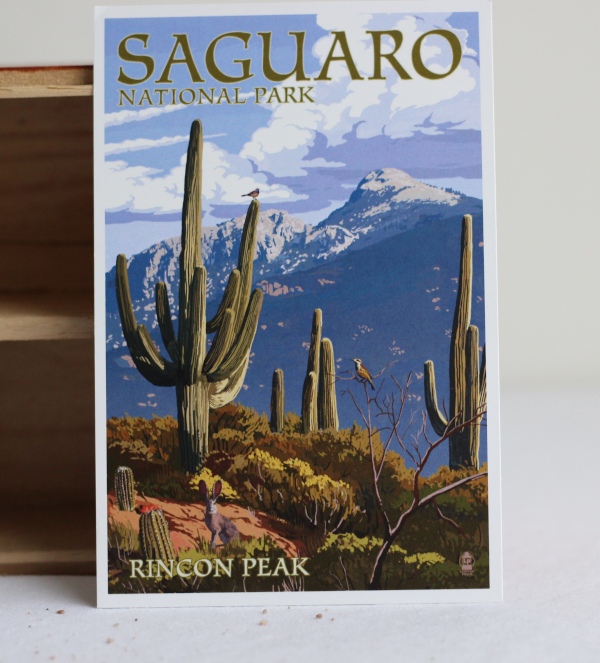
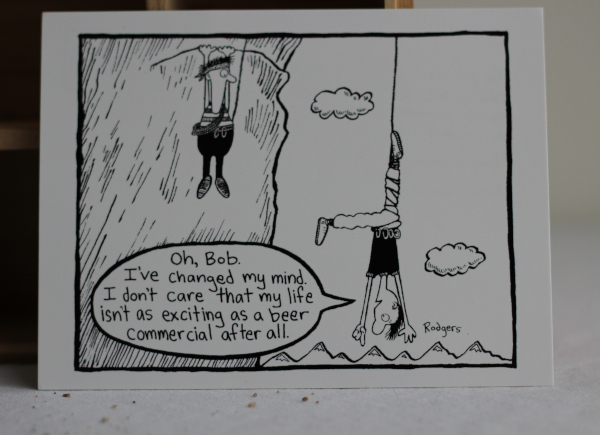
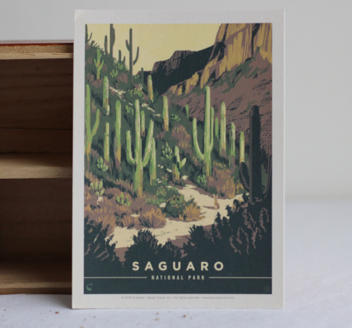

état actuel du marché
La première édition d'Escarcelle aura pour thématique les cartes postales.
- une carte pour le passé : débuter[déjà réservée]
- une carte pour le futur : un hiver bref
- une carte pour s'inventer des souvenirs : saguaro 1
- une carte pour garder le fil : escalade
- une carte pour perdre le fil : saguaro 2
un hiver bref

Souvenir associé: Un hiver si court que plus personne ne change ses pneus. La dernière entreprise de déneigement a fait faillite. Hier, je tentais de me souvenir du bruit des pas dans la neige fraîchement tombée, après une tempête.
Numéro d'identification: 00b
saguaro 1

Souvenir associé: Je suis allé dans le désert pour fuir la neige et faire de l'escalade. Il a mouillé, les plans de grimpe sont tombés à l'eau... Puis le miracle des cactus en fleurs s'est produit. --- Yannick
Numéro d'identification: 01c
escalade

Souvenir associé: Ma première chute en escalade traditionnelle: j'ai bien pensé mourir pendant tout le quart de seconde de mon vol. Heureusement, le coinceur a tenu. Quelle aventure ! --- Yannick
Numéro d'identification: 00d
saguaro 2

Souvenir associé: J'étais dans le désert à observer attentivement comment rien ne bouge. Le temps a passé sans que je m'en rende compte. Quand j'ai finalement émergé de la méditation, j'avais pris un bon coup de soleil ! --- Yannick
Numéro d'identification: 00e
réservations
Les cartes suivantes ont déjà été réservées et ne sont pas présentement disponibles.
débuter [déjà réservée]

Souvenir associé: Ralentir pour mieux accélérer par la suite. Apprendre une chose ou deux pendant qu'on peut encore des erreurs. Et quand tout commencera à faire du sens ce sera magnifique et quand tout commencera à faire du sens ce sera.
Numéro d'identification : 00a
contact
Pour plus d'information sur le projet, contactez l'artiste au escarcelle@finartcialist.com.
Pour consulter les autres oeuvres du projet finartcialist, consultez le site internet finartcialist.com.